import numpy as np
import matplotlib.pyplot as plt
from ipywidgets import interact
import matplotlib.style as style; style.use('seaborn-v0_8')
plt.rcParams['figure.figsize'] = (7.8, 2.5); plt.rcParams['figure.dpi'] = 300
color = plt.rcParams['axes.prop_cycle'].by_key()['color'][0] # get the first color of the default color cycle
plt.rcParams['axes.facecolor'] = 'white'; plt.rcParams['grid.color'] = 'gray'; plt.rcParams['grid.linewidth'] = 0.25; 11 Learning dynamics
Wolfram Barfuss | University of Bonn | 2024/2025
▶ Complex Systems Modeling of Human-Environment Interactions
11.1 Motivation
Modeling model-based reinforcement learning agents
This chapter introduces collective reinforcement learning dynamics - treating the multi-agent reinforcement learning process as a non-linear dynamic system.
Recap | Reinforcement learning
In chapter 04.02-IndividualLearning, we introduced the basics of the temporal-difference reward-prediction reinforcement learning process. In essence, learning means updating the quality estimates, \(Q^i_t(s,a)\), with the current reward-prediction error, \(\delta^i_t(s, a)\), after selection action \(a_t\) in state \(s_t\) according to
\[ Q^i_{t+1}(s_t, a_t) = Q^i_{t}(s_t, a_t) + \alpha^i \delta^i_t(s_t, a_t), \tag{11.1}\]
where \(\alpha^i \in (0,1)\) is the learning rate of agent \(i\), which regulates how much new information the agent uses for the update.
The reward-prediction error, \(\delta^i_t(s_t, a_t)\), equals the difference of the new quality estimate, \((1-\gamma^i) r^i_t + \gamma^i \mathcal Q_n^i(s_{t+1})\), and the current quality estimate, \(\mathcal Q_c^i(s_{t})\),
\[ \delta^i_t(s_t, a_t) = (1-\gamma^i) r^i_t + \gamma^i \mathcal{Q}^i_n(s_{t+1}, a_{t+1}) - \mathcal Q^i_c(s_{t}, a_{t}), \tag{11.2}\]
where the \(\mathcal{Q}_n^i\) represents the quality estimate of the next state and \(\mathcal{Q}_c^i\) represents the quality estimate of the current state. Depending on how we choose, \(\mathcal{Q}_n^i\), and \(\mathcal{Q}_c^i\), we recover various well-known temporal-difference reinforcement learning update schemes (Barfuss et al., 2019).
For example, we covered the Expected SARSA update with \(\mathcal{Q}_n^i (s_{t+1}, a_{t+1}) = \mathcal{Q}_n^i (s_{t+1}) = \sum_b x_t^i(s_{t+1},b) Q^i_t(s_{t+1}, b)\), and \(\mathcal{Q}_c^i = Q^i_t\). The temporal-difference reward-prediction error then reads,
\[\delta^i_t(s_t, a_t) = (1-\gamma^i) r^i_t + \gamma^i \sum_b x_t^i(s_{t+1},b) Q^i_t(s_{t+1}, b) - Q^i_t(s_{t}, a_{t}).\]
Modeling challenges of reinforcement learning
Classic reinforcement learning processes are highly stochastic since, generally, all agent strategies \(x^i(s, a)\), and the environments transition function \(T(s, \boldsymbol a, s')\) are probability distributions. This stochasticity induces some challenges for using reinforcement learning as a modeling tool in complex human-environment systems:
- Sample inefficiency. The agents need many samples to learn something, as they immediately forget a sample experience after a value-belief update.
- Computationally intense. Learning simulations are computationally intense since one requires many simulations to make sense of the noise, and each takes a long time to address the sample inefficiency.
- Rare events. Due to the stochasticity, dealing with rare events is particularly difficult to learn from experience alone.
- Hard to explain. The stochasticity can sometimes make it hard to explain why a phenomenon occurred in a simulation.
In contrast, human learning is highly efficient. Thus, as a model of human behavior, this basic reinforcement learning update scheme is implausible:
- Human cognition is not that simplistic, and their actions are not that stochastic.
- Humans typically build and use a model of the world around them.
- Sometimes, it is possible to invest into multiple options at the same time
How can we address these challenges?
Dynamics of collective reinforcement learning
The essential idea of the collective reinforcement learning dynamics approach is to replace the individual sample realizations of the temporal-difference reward-prediction error with its strategy average plus a small error term,
\[\boldsymbol \delta \leftarrow {\boldsymbol\delta_\mathbf{x}} + \boldsymbol\epsilon.\]
Thus, collective reinforcement learning dynamics describe how agents with access to (a good approximation of) the strategy-average reward-prediction error would learn.
There are multiple interpretations to motivate how the agents can obtain the strategy averages:
- Model-based learners. Agents have a model of how the environment works, including how the other agents behave currently, but not how the other agents learn. The agents use their world model to stabilize learning. In the limit of a perfect model (and sufficient cognitive resources), the error term vanishes, \(\boldsymbol\epsilon \rightarrow 0\).
- Batch learners. The agents store experiences (state observations, rewards, actions, next state observations) inside a memory batch and replay these experiences to make the learning more stable. Batch learning is a common algorithmic technique in machine learning. In the limit of an infinite memory batch, the error term vanishes, \(\boldsymbol\epsilon \rightarrow 0\) (Barfuss, 2020).
- Different timescales. The agents learn on two different time scales. On one time scale, the agents interact with the environment, collecting experiences and integrating them to improve their quality estimates while keeping their strategies fixed. On the other time scale, they use the accumulated experiences to adapt their strategy. Timescale separation is a common technique used in theoretical physics. In the limit of a complete time scale separation, having infinite experiences between two strategy updates, the error term vanishes, \(\boldsymbol\epsilon \rightarrow 0\) (Barfuss, 2022).
- Proportional investors. Instead of choosing actions individually, agents can invest an endowment into actions proportional to their policy. Assuming by analogy, that the environment is not in one of its states but described by its state distribution, agents receive feedback proportionally to their investment. When there is no noise in the rewards itself, the error term vanishes, \(\boldsymbol\epsilon \rightarrow 0\)
In the following, we focus on the idealized case of a vanishing error term, \(\boldsymbol\epsilon \rightarrow 0\).
Learning goals
After this chapter, students will be able to:
- Explain the rationale of a dynamic systems treatment of reinforcement learning for complex human-environment interactions.
- Study dynamic system properties of multi-agent reinforcement learning in human-environment models
- Use open-source Python packages.
In the next section, we will derive the strategy-average deterministic approximation model of the multi-agent reinforcement learning process. It goes beyond this lecture to implement the learning dynamics ourselves (although we could if we invested enough time). Luckily, we can utilize an open-source Python package to apply and study the learning dynamics, which we will do in the section afterward.
11.2 Derivation
We import our usual libraries.
Then, we install the pyCRLD package from Github to compare the mathematical derivation with the respective code method.
!pip install git+https://github.com/barfusslab/pyCRLD.gitfrom pyCRLD.Agents.Base import abase as AgentBaseClassFrom Equation 11.2, \[ \delta^i_t(s_t, a_t) = (1-\gamma^i) r^i_t + \gamma^i \mathcal{Q}^i_n(s_{t+1}, a_{t+1}) - \mathcal Q^i_c(s_{t}, a_{t}), \]
we see that we need to construct the strategy-average reward, the strategy-average value of the next state, and the strategy-average value of the current state.
1) Rewards
The strategy-average version of the current reward is obtained by considering each agent \(i\) taking action \(a\) in state \(s\) when all other agents \(j\) act according to their strategy \(x^j(s, a^j)\), causing the environment to transition to the next state \(s'\) with probability \(T(s, \boldsymbol a, s')\), during which agent \(i\) receives reward \(R^i(s, \boldsymbol a, s')\). Mathematically, we write,
\[ R^i_\mathbf{x}(s, a) = \sum_{s'} \sum_{a^j} \prod_{j\neq i} x^j(s, a^j) T(s, \boldsymbol a, s') R^i(s, \mathbf a, s'). \]
Notation-wise, the formulation \(\sum_{a^j} \prod_{j\neq i} X^j(s, a^j)\) is short for
\[ \sum_{a^j} \prod_{j\neq i} X^j(s, a^j) = \sum_{a^1 \in \mathcal A^1} \cdots \sum_{a^{i-1} \in \mathcal A^{i-1}} \sum_{a^{i+1} \in \mathcal A^{i+1}} \cdots \sum_{a^N \in \mathcal A^N} x^1(s, a^1) \cdots x^{i-1}(s, a^{i-1}) x^{i+1}(s, a^{i+1}) \cdots x^N(s, a^N) \]
In the pyCRLD package, it is implemented as follows.
AgentBaseClass.Risa??Signature: AgentBaseClass.Risa(self, Xisa: jax.Array) -> jax.Array Call signature: AgentBaseClass.Risa(*args, **kwargs) Type: PjitFunction String form: <PjitFunction of <function abase.Risa at 0x140f4c4a0>> File: ~/Other/miniconda3/envs/iw-dev/lib/python3.11/site-packages/pyCRLD/Agents/Base.py Source: @partial(jit, static_argnums=0) def Risa(self, Xisa:jnp.ndarray # Joint strategy ) -> jnp.ndarray: # Average reward """Compute average reward `Risa`, given joint strategy `Xisa`""" i = 0; a = 1; s = 2; s_ = 3 # Variables j2k = list(range(4, 4+self.N-1)) # other agents b2d = list(range(4+self.N-1, 4+self.N-1 + self.N)) # all actions e2f = list(range(3+2*self.N, 3+2*self.N + self.N-1)) # all other acts sumsis = [[j2k[l], s, e2f[l]] for l in range(self.N-1)] # sum inds otherX = list(it.chain(*zip((self.N-1)*[Xisa], sumsis))) args = [self.Omega, [i]+j2k+[a]+b2d+e2f] + otherX\ + [self.T, [s]+b2d+[s_], self.R, [i, s]+b2d+[s_], [i, s, a]] return jnp.einsum(*args, optimize=self.opti)
The @partial(jit, static_argnums=0) decorator above the method makes the code execution fast. jit stands for just-in-time compilation and comes from the Python package JAX. Using JAX is very similar to using numpy. Hence, there is the JAX numpy module, jnp. See, for example, jnp.einsum in the code above.
Another trick is the use of the self.Omega object, which is a tensor of zeros and ones constructed to make the summation \(\sum_{a^j} \prod_{j\neq i} X^j(s, a^j)\) work with the fast einsum method.
2) Next quality estimates
The strategy average of the following state value is likewise computed by averaging the over all actions of the other agents and the following states.
For each agent \(i\), state \(s\), and action \(a\), all other agents \(j\neq i\) choose their action \(a^j\) with probability \(x^j(s, a^j)\). Consequently, the environment transitions to the next state \(s'\) with probability \(T(s, \boldsymbol a, s')\). At \(s'\), the agent estimates the quality of the next state to be of \(v_\mathbf{x}^i(s') = \sum_{a^i \in \mathcal A^i} x^i(s', a^i) q_\mathbf{x}^i(s', a^i)\). Mathematically, we write,
\[ {}^{n}\!{Q}_\mathbf{x}^i(s, a) = \sum_{s'} \sum_{a^j} \prod_{j \neq i} x^j(s, a^j) T(s, \boldsymbol a, s') v_\mathbf{x}^i(s'). \]
State values
We compute the state values \(v_\mathbf{x}^i(s)\) exactly like in Chapters 03.01 and 03.03. We write the Bellman equation in matrix form and bring the values \(\mathbf v^i_\mathbf{x}\) on one side,
\[\mathbf v^i_\mathbf{x} = (1-\gamma^i) (\mathbf 1_Z - \gamma^i\underline{\mathbf T}_\mathbf{x})^{-1} \mathbf R^i_\mathbf{x}.\]
In the pyCRLD package, it is implemented as follows.
AgentBaseClass.Vis??Signature: AgentBaseClass.Vis( self, Xisa: jax.Array, Ris: jax.Array = None, Tss: jax.Array = None, Risa: jax.Array = None, ) -> jax.Array Call signature: AgentBaseClass.Vis(*args, **kwargs) Type: PjitFunction String form: <PjitFunction of <function abase.Vis at 0x140f4cb80>> File: ~/Other/miniconda3/envs/iw-dev/lib/python3.11/site-packages/pyCRLD/Agents/Base.py Source: @partial(jit, static_argnums=0) def Vis(self, Xisa:jnp.ndarray, # Joint strategy Ris:jnp.ndarray=None, # Optional reward for speed-up Tss:jnp.ndarray=None, # Optional transition for speed-up Risa:jnp.ndarray=None # Optional reward for speed-up ) -> jnp.ndarray: # Average state values """Compute average state values `Vis`, given joint strategy `Xisa`""" # For speed up Ris = self.Ris(Xisa, Risa=Risa) if Ris is None else Ris Tss = self.Tss(Xisa) if Tss is None else Tss i = 0 # agent i s = 1 # state s sp = 2 # next state s' n = np.newaxis Miss = np.eye(self.Z)[n,:,:] - self.gamma[:, n, n] * Tss[n,:,:] invMiss = jnp.linalg.inv(Miss) return self.pre[:,n] * jnp.einsum(invMiss, [i, s, sp], Ris, [i, sp], [i, s], optimize=self.opti)
Transition matrix
The transition matrix \(\underline{\mathbf T}_\mathbf{x}\) is a \(Z \times Z\) matrix, where the element \(T_\mathbf{x}(s,s')\) is the probability of transitioning from state \(s\) to \(s'\) under the joint policy \(\mathbf x\). It is computed as
\[T_\mathbf{x}(s,s') = \sum_{a^i}\prod_i x^i(s, a^i) T(s, \mathbf a, s').\]
In the pyCRLD package, it is implemented as follows.
AgentBaseClass.Tss??Signature: AgentBaseClass.Tss(self, Xisa: jax.Array) -> jax.Array Call signature: AgentBaseClass.Tss(*args, **kwargs) Type: PjitFunction String form: <PjitFunction of <function abase.Tss at 0x140f4afc0>> File: ~/Other/miniconda3/envs/iw-dev/lib/python3.11/site-packages/pyCRLD/Agents/Base.py Source: @partial(jit, static_argnums=0) def Tss(self, Xisa:jnp.ndarray # Joint strategy ) -> jnp.ndarray: # Average transition matrix """Compute average transition model `Tss`, given joint strategy `Xisa`""" # i = 0 # agent i (not needed) s = 1 # state s sprim = 2 # next state s' b2d = list(range(3, 3+self.N)) # all actions X4einsum = list(it.chain(*zip(Xisa, [[s, b2d[a]] for a in range(self.N)]))) args = X4einsum + [self.T, [s]+b2d+[sprim], [s, sprim]] return jnp.einsum(*args, optimize=self.opti)
State rewards
The average reward \(\mathbf R^i_\mathbf{x}\) is a \(N \times Z\)-matrix, where the element \(R_\mathbf{x}^i(s)\) is the expected reward agent \(i\) receives in state \(s\) under the joint policy \(\mathbf x\). It is computed as
\[ R_\mathbf{x}^i(s) = \sum_{s'} \sum_{a^i}\prod_i x^i(s, a^i) T(s, \mathbf a, s') R^i(s, \mathbf a, s').\]
In the pyCRLD package, it is implemented as follows.
AgentBaseClass.Ris??Signature: AgentBaseClass.Ris(self, Xisa: jax.Array, Risa: jax.Array = None) -> jax.Array Call signature: AgentBaseClass.Ris(*args, **kwargs) Type: PjitFunction String form: <PjitFunction of <function abase.Ris at 0x140f4bd80>> File: ~/Other/miniconda3/envs/iw-dev/lib/python3.11/site-packages/pyCRLD/Agents/Base.py Source: @partial(jit, static_argnums=0) def Ris(self, Xisa:jnp.ndarray, # Joint strategy Risa:jnp.ndarray=None # Optional reward for speed-up ) -> jnp.ndarray: # Average reward """Compute average reward `Ris`, given joint strategy `Xisa`""" if Risa is None: # for speed up # Variables i = 0; s = 1; sprim = 2; b2d = list(range(3, 3+self.N)) X4einsum = list(it.chain(*zip(Xisa, [[s, b2d[a]] for a in range(self.N)]))) args = X4einsum + [self.T, [s]+b2d+[sprim], self.R, [i, s]+b2d+[sprim], [i, s]] return jnp.einsum(*args, optimize=self.opti) else: # Compute Ris from Risa i=0; s=1; a=2 args = [Xisa, [i, s, a], Risa, [i, s, a], [i, s]] return jnp.einsum(*args, optimize=self.opti)
3) Current quality estimates
Assuming that agents select their actions according to a softmax policy function,
\[ x^i_t(s, a) = \frac{\exp \beta^i Q^i_t(s, a)}{\sum_{b}\exp \beta^i Q^i_t(s, b)}, \tag{11.3}\]
where \(\beta^i\) is the intensity of choice of agent \(i\), we can reformulate the update of the state-action quality estimates (Equation 11.1) into an update of the policy, i.e., state-action probabilities. Doing so reduces the dynamic system’s state space size, as we do not need to track the quality estimates of each agent in each state-action pair. Instead, we only need to track the state-action probabilities of each agent in each state-action pair. This is advantageous as the lower dimensional dynamic state space is more straightforward to analyze and visualize.
For the derivation of the joint policy update, we need to solve the policy function for \(Q^i_t(s, a)\),
\[\begin{align} Q^i_t(s,a) &= \frac{1}{\beta^i} \ln x^i_t(s, a) + \frac{1}{\beta^i}\ln\left[ \sum_b \exp \beta^i Q^i_t(s,b) \right] \\ &= \frac{1}{\beta^i} \ln x^i_t(s, a) + C^i(s) \end{align}\]
where \(C^i(s)\) denots a constant in actions. It may vary for each agent and state but not for actions.
The step-by-step derivation of the joint policy update is as follows:
\[\begin{align} x^i_{t+1}(s, a) &= \frac{\exp \beta^i Q^i_{t+1}(s, a)}{\sum_{b} \exp \beta^i Q^i_{t+1}(s,b)} \\[1em] % % &= \frac{\exp\left[ \beta^i \left(Q^i_{t}(s, a) + \alpha^i \delta^i_t(s, a)\right)\right]} {\sum_{b} \exp\left[ \beta^i \left(Q_{t}(s, b) + \alpha^i \delta^i_t(s, b)\right)\right]} \qquad \text{Inserting the belief update} \\[1em] % % &= \frac{\exp\left[ \beta^i Q^i_{t}(s, a)\right] \exp\left[\alpha^i\beta^i \delta^i_t(s, a)\right]} {\sum_{b} \exp\left[ \beta^i Q_{t}(s, b) \right] \exp\left[ \alpha^i\beta^i \delta^i_t(s, b)\right]} \qquad \text{Factoring the exponentials} \\[1em] % % % &= \frac{x^i_t(s, a) \exp\left[\alpha^i\beta^i \delta^i_t(s, a)\right]} {\sum_{b} x^i_t(s, b) \exp\left[ \alpha^i\beta^i \delta^i_t(s, b)\right]} \qquad \text{Multiplying by $\frac{\frac{1}{z}}{\frac{1}{z}}$ with $z=\sum_{c} \exp\beta^i Q^i_t(s, c)$}\\[1em] % % &= \frac{x^i_t(s, a) \exp\left[\alpha^i\beta^i \delta^i_\mathbf{x}(s, a)\right]} {\sum_{b} x^i_t(s, b) \exp\left[ \alpha^i\beta^i \delta^i_\mathbf{x}(s, b)\right]} \qquad \text{Replacing sample $\delta^i_t$ with strategy-average $\delta^i_\mathbf{x}$}\\[1em] % % % &= \frac{x^i_t(s, a) \exp\left[\alpha^i\beta^i \left( (1-\gamma^i)R^i_\mathbf{x}(s,a) + \gamma^i \cdot {}^{n}\!{Q}_\mathbf{x}^i(s, a) - Q^i_t(s,a)\right)\right]} {\sum_{b} x^i_t(s, b) \exp\left[ \alpha^i\beta^i \left( (1-\gamma^i)R^i_\mathbf{x}(s,b) + \gamma^i \cdot {}^{n}\!{Q}_\mathbf{x}^i(s, b) - Q^i_t(s,b)\right)\right]} \qquad \text{Filling $\delta^i_\mathbf{x}$}\\[1em] % % % &= \frac{x^i_t(s, a) \exp\left[\alpha^i\beta^i \left( (1-\gamma^i)R^i_\mathbf{x}(s,a) + \gamma^i \cdot {}^{n}\!{Q}_\mathbf{x}^i(s, a) - \frac{1}{\beta^i} \ln x^i_t(s,a)\right)\right]} {\sum_{b} x^i_t(s, b) \exp\left[ \alpha^i\beta^i \left( (1-\gamma^i)R^i_\mathbf{x}(s,b) + \gamma^i \cdot {}^{n}\!{Q}_\mathbf{x}^i(s, b) - \frac{1}{\beta^i} \ln x^i_t(s,b)\right)\right]} \\ & \qquad \text{Using $Q^i_t(s, a) = \frac{1}{\beta^i} \ln x_t(s, a) + C^i(s)$} \end{align}\]
In summary, the strategy-average of the current state-action value, \(Q_t^i(s,a)\) is
\[\frac{1}{\beta^i} \ln x^i(s, a).\]
Strategy-average reward-prediction temporal-difference error
from pyCRLD.Agents.StrategySARSA import stratSARSATaken together, the strategy-average reward-prediction error is
\[ \delta_\mathbf{x}^i(s, a) = (1-\gamma^i) R^i_\mathbf{x}(s, a) + \gamma^i \cdot {}^{n}\!{Q}_\mathbf{x}^i(s, a) - \frac{1}{\beta^i} \ln x^i(s, a), \]
to be inserted in the joint policy update,
\[ x^i_{t+1}(s, a) = \frac{x^i_t(s, a) \exp\left[\alpha^i\beta^i \delta^i_\mathbf{x}(s, a)\right]} {\sum_{b} x^i_t(s, b) \exp\left[ \alpha^i\beta^i \delta^i_\mathbf{x}(s, b)\right]}. \]
We made the strategy update independent of the quality beliefs.
In the pyCRLD package, update step is implement as follows,
stratSARSA.step??Signature: stratSARSA.step(self, Xisa) -> tuple Call signature: stratSARSA.step(*args, **kwargs) Type: PjitFunction String form: <PjitFunction of <function strategybase.step at 0x140f907c0>> File: ~/Other/miniconda3/envs/iw-dev/lib/python3.11/site-packages/pyCRLD/Agents/StrategyBase.py Source: @partial(jit, static_argnums=0) def step(self, Xisa # Joint strategy ) -> tuple: # (Updated joint strategy, Prediction error) """ Performs a learning step along the reward-prediction/temporal-difference error in strategy space, given joint strategy `Xisa`. """ TDe = self.TDerror(Xisa) n = jnp.newaxis XexpaTDe = Xisa * jnp.exp(self.alpha[:,n,n] * TDe) return XexpaTDe / XexpaTDe.sum(-1, keepdims=True), TDe
The step method comes from a parent class, called strategybase, and calls the TDerror method, which is initialized upon creating a specific agent collective with the concrete reward-prediction error method from the SARSA agent.
The reward-prediction error of the SARSA agent is implemented as follows.
stratSARSA.RPEisa??Signature: stratSARSA.RPEisa(self, Xisa, norm=False) -> numpy.ndarray Call signature: stratSARSA.RPEisa(*args, **kwargs) Type: PjitFunction String form: <PjitFunction of <function stratSARSA.RPEisa at 0x140f905e0>> File: ~/Other/miniconda3/envs/iw-dev/lib/python3.11/site-packages/pyCRLD/Agents/StrategySARSA.py Source: @partial(jit, static_argnums=(0,2)) def RPEisa(self, Xisa, # Joint strategy norm=False # normalize error around actions? ) -> np.ndarray: # RP/TD error """ Compute reward-prediction/temporal-difference error for strategy SARSA dynamics, given joint strategy `Xisa`. """ R = self.Risa(Xisa) NextQ = self.NextQisa(Xisa, Risa=R) n = jnp.newaxis E = self.pre[:,n,n]*R + self.gamma[:,n,n]*NextQ - 1/self.beta[:, n, n] * jnp.log(Xisa) E *= self.beta[:,n,n] E = E - E.mean(axis=2, keepdims=True) if norm else E return E
11.3 Application
Let us apply the collective reinforcement learning dynamics to the ecological public good environment from Chapter 03.03. We will highlight the complex dynamics phenomena that arise from the collective reinforcement learning dynamics (Barfuss et al., 2024).
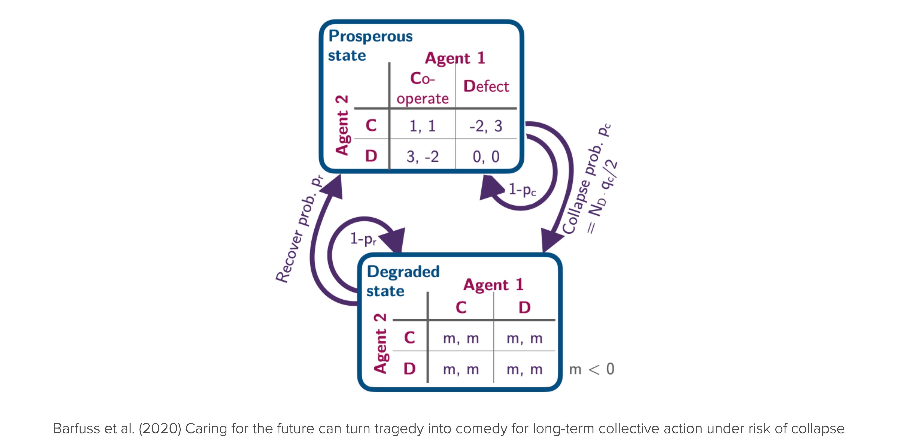
For convenience, we import the environment class from the pyCRLD package. However, you now possess all the skills needed to implement it on your own.
from pyCRLD.Environments.EcologicalPublicGood import EcologicalPublicGood as EcoPGWe initialize the environment with two agents, a benefit-to-cost ratio of \(f=1.2\), a cost of \(c=5\), a collapse impact of \(m=-5\), a collapse leverage of \(0.2\), and a recovery probability of \(0.01\). We set the degraded_choice parameter to False to remove all agency from the agents in the degraded state. In other word, regardless what they do in the degraded state, they have to wait for the recovery on average \(1/q_r\) timesteps.
# Inititalize the ecological public good environment
env = EcoPG(N=2, f=1.2, c=5, m=-5, qc=0.2, qr=0.01, degraded_choice=False)These parameters ensure to have the same short-term welfare values in the prosperous state as shown in the Figure above.
p = env.Sset.index('p'); g = env.Sset.index('g') # indices of the prosperous and degraded state
print("Agent zero's welfare\n", env.R[0, p, :, :, p])
print("\nAgent one's welfare\n", env.R[1, p, :, :, p])Agent zero's welfare
[[ 1. -2.]
[ 3. 0.]]
Agent one's welfare
[[ 1. 3.]
[-2. 0.]]Learning trajectories
We create a multi-agent-environment interface MAEi composed of SARSA agents with a learning rate of \(0.05\), a choice intensity of \(50.0\), and a discount factor of \(0.75\). We set the use_prefactor parameter to True to use the pre-factor \((1-\gamma)\) in the policy update.
MAEi = stratSARSA(env, learning_rates=0.05, choice_intensities=50.0, discount_factors=0.75, use_prefactor=True)Let us evolve the learning from a random initial joint policy,
x = MAEi.random_softmax_strategy()
xArray([[[0.65391284, 0.34608716],
[0.540063 , 0.45993698]],
[[0.23748323, 0.7625168 ],
[0.6527203 , 0.34727973]]], dtype=float32)for a maximum of 5000 time steps with a convergence tolerance of \(10^{-5}\). Thus, if two consecutive joint policies are closer than \(10^{-5}\), the learning process stops.
policy_trajectory_Xtisa, fixedpointreached = MAEi.trajectory(x, Tmax=5000, tolerance=10**-5)
fixedpointreachedTrueWe have reached a fixed point and the learning trajecotry has a length of
len(policy_trajectory_Xtisa)153Let us visualize the time evolution of learning trajectory.
c = env.Aset[0].index('c'); d = env.Aset[0].index('d') # action indices
plt.plot(policy_trajectory_Xtisa[:, 0, p, c], label='Agent zero in prosperous state', c='blue', lw=3, alpha=0.5)
plt.plot(policy_trajectory_Xtisa[:, 1, p, c], label='Agent one in prosperous state', c='blue', ls='--')
plt.plot(policy_trajectory_Xtisa[:, 0, g, c], label='Agent zero in degraded state', c='red', lw=3, alpha=0.5)
plt.plot(policy_trajectory_Xtisa[:, 1, g, c], label='Agent one in degraded state', c='red', ls='--');
plt.xlabel('Time steps'); plt.ylabel('Cooperation probability'); plt.legend(); plt.ylim(0, 1);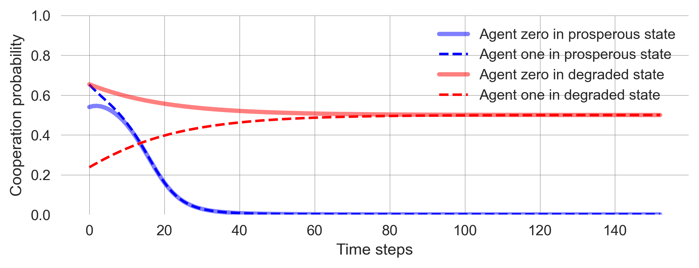
Let’s repeat this serveral times from different random joint policies. Exectue the cell below multiple times and observe what happens.
x = MAEi.random_softmax_strategy()
policy_trajectory_Xtisa, fixedpointreached = MAEi.trajectory(x, Tmax=5000, tolerance=10**-5)
plt.plot(policy_trajectory_Xtisa[:, 0, p, c], label='Agent zero in prosperous state', c='blue', lw=3, alpha=0.5)
plt.plot(policy_trajectory_Xtisa[:, 1, p, c], label='Agent one in prosperous state', c='blue', ls='--')
plt.plot(policy_trajectory_Xtisa[:, 0, g, c], label='Agent zero in degraded state', c='red', lw=3, alpha=0.5)
plt.plot(policy_trajectory_Xtisa[:, 1, g, c], label='Agent one in degraded state', c='red', ls='--');
plt.xlabel('Time steps'); plt.ylabel('Cooperation probability'); plt.legend(); plt.ylim(0, 1);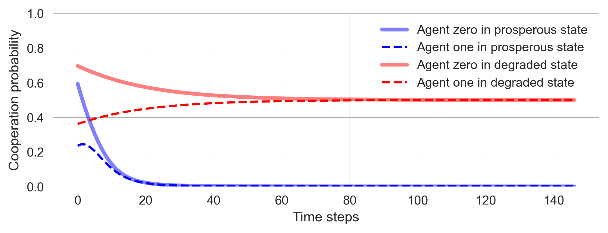
Some observations you should make:
- Learning occurs fast. The agents quickly attain a stable state within just a few hundred steps, and their execution is remarkably rapid.
- Learning is deterministic. Given an initial joint policy, the learning process has no stochastic fluctuations. The agents learn deterministically. However, what they learn is a probability distribution.
- Outcome is bistable. The agents learn to either cooperate or defect completely in the prosperous state, depending on where they start. If they start closer to cooperation, they learn to cooperate. If they start closer to defection, they learn to defect.
- Agents randomize. In the degraded state, agents learn to randomize over actions fully, i.e., choose each of their two options with a probability of 0.5. This is because the agents cannot influence the outcome of their actions and, thus, are driven only by exploration. You can imagine the desire to explore as a form of intrinsic motivation that dominates here without controllable extrinsic rewards.
Flow plot
The determinism and the fast computation allow for an improved visualization of the learning process. As with any deterministic dynamic system, we can visualize the flow plot of the dynamics (See Chapter 02.01).
In the pyCRLD package, we have a special module for that purpose.
from pyCRLD.Utils import FlowPlot as fpApplying this function yields a flow plot of the learning dynamics which highlights the bistability of the learning process in the prosperous state and the randomization in the degraded state.
x = ([0], [g,p], [c]) # which (agent, observation, action) to plot on x axis
y = ([1], [g,p], [c]) # which (agent, observation, action) to plot on y axis
eps=10e-3; action_probability_points = np.linspace(0+eps, 1.0-eps, 9)
ax = fp.plot_strategy_flow(MAEi, x, y, action_probability_points, conds=env.Sset)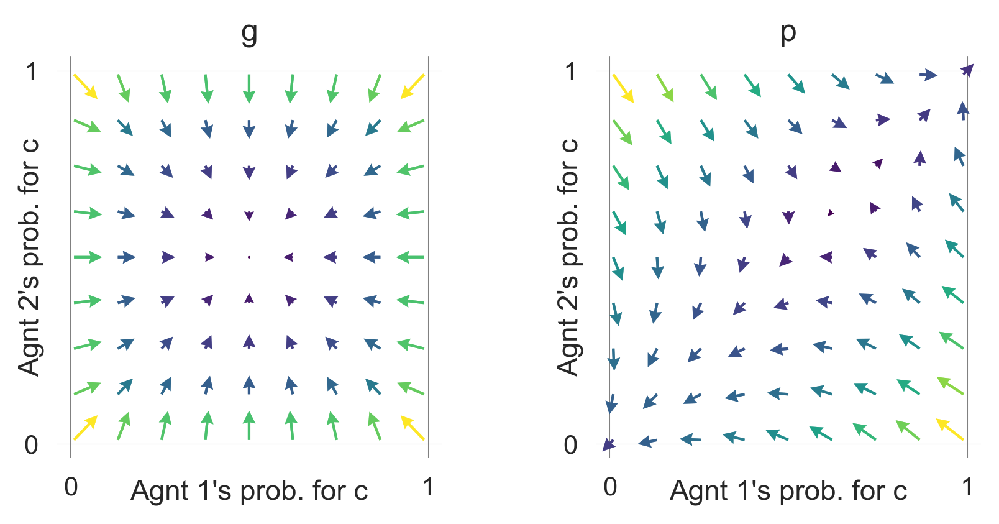
These flow plots allow for a geometric understanding of the collective learning dynamics over the whole joint policy space. In contrast to a standard flow plot, per default, the arrows show the temporal-difference reward prediction error. Thus, they have a cognitive interpretation.
We may use them to study how the parameters of the learning agents and the environment influence the outcome.
def plot_flow(DiscountFactor=0.75, ChoiceIntensity=50, CollapseImpact=-5, CollapseLeverage=0.2):
env = EcoPG(N=2, f=1.2, c=5, m=CollapseImpact, qc=CollapseLeverage,
qr=0.01, degraded_choice=False)
MAEi = stratSARSA(env, learning_rates=0.05, choice_intensities=ChoiceIntensity,
discount_factors=DiscountFactor, use_prefactor=True)
x = ([0], [g,p], [c]) # which (agent, observation, action) to plot on x axis
y = ([1], [g,p], [c]) # which (agent, observation, action) to plot on y axis
eps=10e-3; action_probability_points = np.linspace(0+eps, 1.0-eps, 9)
ax = fp.plot_strategy_flow(MAEi, x, y, action_probability_points, conds=env.Sset)When working with this material in a Jupyter notebook, we can interactively study the parameter dependence of the flow plot.
For example, caring more for the future makes the cooperative basin of attraction larger.
plot_flow(DiscountFactor=0.8)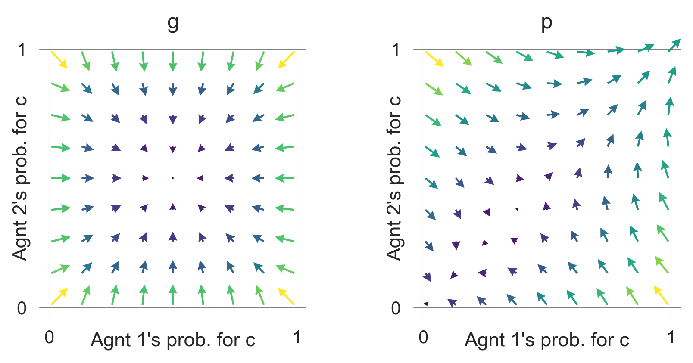
So does a more severe collapse impact,
plot_flow(CollapseImpact=-6)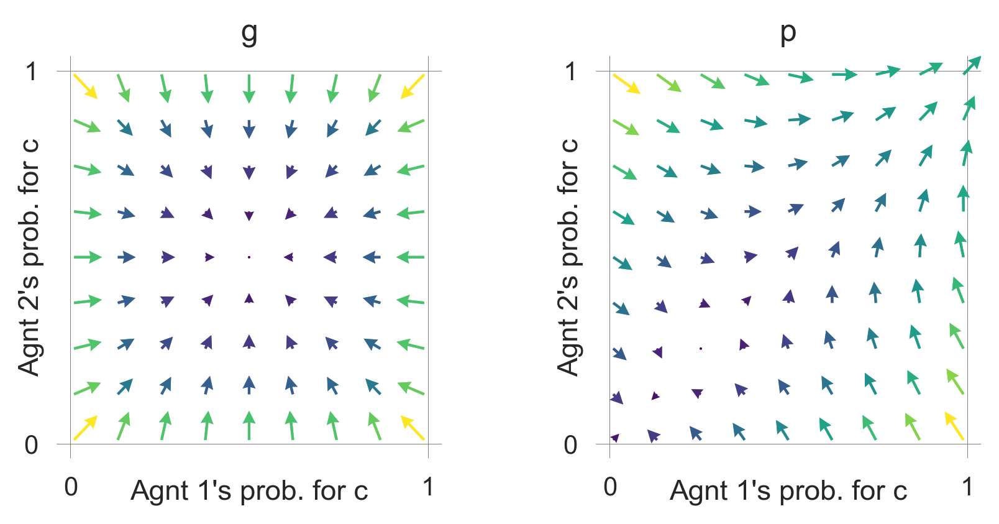
and a collapse that occurse more likely or faster.
plot_flow(CollapseLeverage=0.3)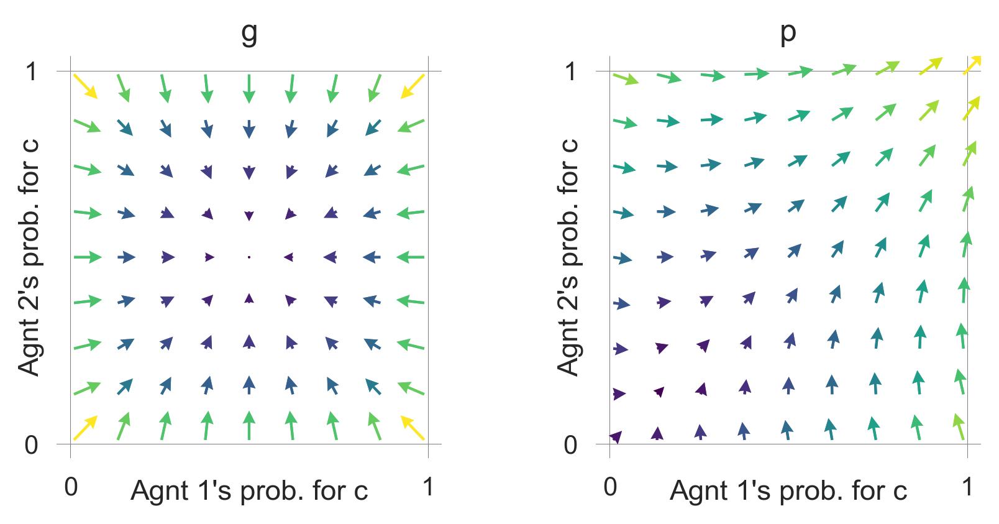
The flow in the degraded state is unaffected by these parameter modulations.
A very low choice intensity makes the desire to explore (i.e., randomize) dominate also in the prosperous state.
plot_flow(ChoiceIntensity=1)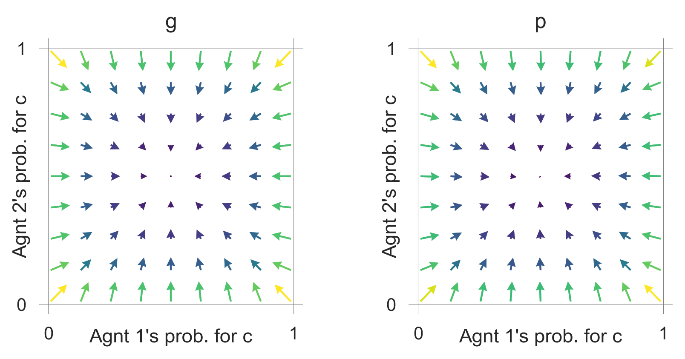
Critical transition
Let us study the learning behavior around the separatrix of the bistable region.
First, we define a function that allows us to enter initial cooperation probabilities for both agents and return a proper joint policy. This function sets the cooperation probability in the degraded state to 0.5 for both agents, as we have seen that the agents will eventually learn to randomize in the degraded state and we are not interested in that part of the learning behavior.
def compile_strategy(p0c:float, # cooperation probability of agent zero
p1c:float): # cooperation probability of agent one
Pi = np.array([0.5, p0c]) # coop. prob. in the degraded state set to 0.5
Pj = np.array([0.5, p1c])
xi = np.array([Pi, 1-Pi]).T
xj = np.array([Pj, 1-Pj]).T
return np.array([xi, xj]) We setup the multiagent-environment interaface.
env = EcoPG(N=2, f=1.2, c=5, m=-5, qc=0.2, qr=0.01, degraded_choice=False)
MAEi = stratSARSA(env=env, learning_rates=0.01, choice_intensities=100, discount_factors=0.75,
use_prefactor=True)To get a feeling for the critical transition, we create three well chosen learning trajectories.
xtrajs = [] # storing strategy trajectories
fprs = [] # and whether a fixed point is reached
for pc in [0.18, 0.19, 0.20]: # cooperation probability of agent 1
X = compile_strategy(pc, 0.95)
xtraj, fixedpointreached = MAEi.trajectory(X, Tmax=5000, tolerance=10**-5)
xtrajs.append(xtraj); fprs.append(fixedpointreached)
print("Trajectory length:",len(xtraj))Trajectory length: 178
Trajectory length: 234
Trajectory length: 174We plot them ontop of the learning flow.
fig = plt.figure(figsize=(12, 3.5)); ax = fig.add_subplot(132) # to center the plot
fig.add_subplot(131, xticks=[], yticks=[]); fig.add_subplot(133, xticks=[], yticks=[]);
x = ([0], [p], [c]) # which (agent, observation, action) to plot on x axis
y = ([1], [p], [c]) # which (agent, observation, action) to plot on y axis
eps=10e-3; action_probability_points = np.linspace(0+eps, 1.0-eps, 9)
fp.plot_strategy_flow(MAEi, x, y, action_probability_points, axes=[ax])
# Add trajectories to flow plot
fp.plot_trajectories(xtrajs, x=x, y=y, fprs=fprs, cols=['red','blue','blue'],
lws=[2], msss=[2], lss=['-'], alphas=[0.75], axes=[ax]);
ax.set_ylabel("Agent 2's cooperation probability");
ax.set_xlabel("Agent 1's cooperation probability");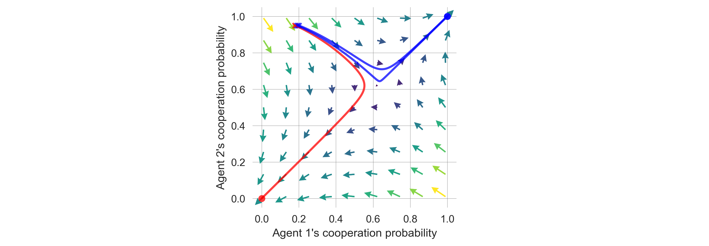
Next, we create a more fine-grained bundle of learning trajectories.
# Cooperation probability of agent 1
pcs = np.concatenate([np.linspace(0.01, 0.99, 51), np.linspace(0.185, 0.195, 151)])
pcs = np.sort(np.unique(pcs))
Xktisa = [] # storing strategy trajectories
fprs = [] # and whether a fixed point is reached
for i, pc in enumerate(pcs):
print(f"Progress: {((i+1)/len(pcs)):.2%}", end="\r")
X = compile_strategy(pc, 0.95)
PolicyTrajectories_Xtisa, fixedpointreached = MAEi.trajectory(X, Tmax=5000, tolerance=10**-5)
Xktisa.append(PolicyTrajectories_Xtisa)
fprs.append(fixedpointreached)Progress: 100.00%We obtain the critical point in this bundle of learning trajectories where the two agents switch or tip from complete defection to complete cooperation.
First, we check that all trajectories converged.
np.all(fprs)TrueThen, we obtain the cooperation probabilities at convergence.
converged_pcs = np.array([Xtisa[-1][:, p, c] for Xtisa in Xktisa])
converged_pcs.shape(201, 2)Last, we show the biomodal distribution of full defection and full cooperation.
np.histogram(np.array(converged_pcs).mean(-1), range=(0,1))[0]array([ 80, 0, 0, 0, 0, 0, 0, 0, 0, 121])Thus, the critical point lies at the index
cp = np.histogram(np.array(converged_pcs).mean(-1), range=(0,1))[0][0]
cp80and has an approximate value between
print(pcs[cp-1], 'and', pcs[cp], '.')0.18966666666666668 and 0.18973333333333334 .We use this more fine-grained bundle of learning trajectories to visualize the phenomenon of a critical slowing down by plotting the time steps required to reach convergence.
plt.plot(pcs[:cp], [len(Xtisa) for Xtisa in Xktisa[:cp]],
'-', color='red', lw=2, alpha=0.8) # defectors in red
plt.plot(pcs[cp:], [len(Xtisa) for Xtisa in Xktisa[cp:]],
'-', color='blue', lw=2, alpha=0.6) # cooperators in blue
plt.ylim(0); plt.ylabel('Timesteps to convergence')
plt.xlabel(f"Agent 1's cooperation probability in the prosperous state");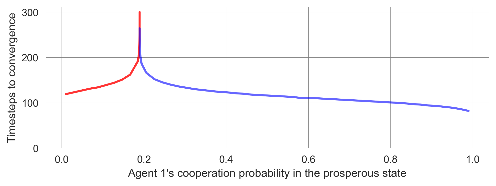
We also observe a kind of transient tipping point in the learning dynamics, when plotting the two closest trajectories around the critical point.
def plot_TransientTipping(xlim=None):
# Plot the defecting learners in red
plt.plot(Xktisa[cp-1][:, 0, p, c], color='red', lw=5, ls=':', label='Agent zero')
plt.plot(Xktisa[cp-1][:, 1, p, c], color='red', lw=4, ls="--", alpha=0.4, label='Agent one')
# Plot the cooperating learners in blue
plt.plot(Xktisa[cp][:, 0, p, c], color='blue', lw=3, ls=':', label='Agent zero')
plt.plot(Xktisa[cp][:, 1, p, c], color='blue', lw=2, ls="--", alpha=0.4, label='Agent one')
plt.xlim(xlim); plt.legend(); plt.xlabel("Timesteps"); plt.ylabel("Cooperation")plot_TransientTipping()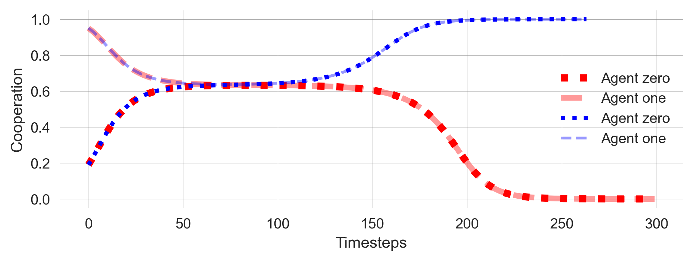
During this emergent timescale separation, the learning process seems to settle on a mixed policy after approximately 50 timesteps. It remains at this point for another 50 steps, which is the same duration it took to reach this mixed policy (Figure 11.1). The learning adjusts the policies more rapidly after this period until they converge to two deterministic policies.
plot_TransientTipping((0, 95))
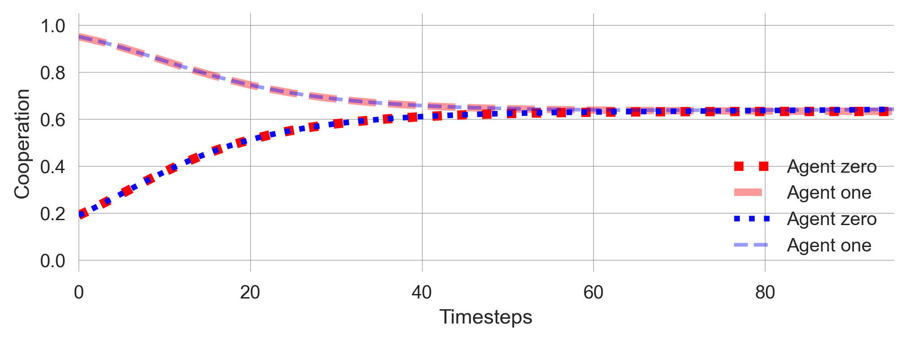
Hysteresis
The last phenomenon we want to highlight is hysteresis (See Chapter 02.02). We study the cooperation probabilities of the agents in the prosperous state as a function of the discount factor \(\gamma\). We know from Chapter 03.03 that caring for the future can turn a tragedy of the commons into a comedy while passing through the coordination regime.
In the following, we start at a relatively low level of caring for the future, increase it, and then decrease it again, all while letting the agent learn along
First, let us create the discount factor values.
dcfs = list(np.arange(0.6, 0.9, 0.005))
hystcurve = dcfs + dcfs[::-1]Then, we set up the environment and start the simulation from a random policy. We let the agents learn for 2500 time steps or until the learning process converges with a tiny tolerance. Then, we record the final policy, advance the discount factor, and restart from the previous final policy.
# Set up the ecological public goods environment
env = EcoPG(N=2, f=1.2, c=5, m=-5, qc=0.2, qr=0.01, degraded_choice=False)
coops = [] # for storing the cooperation probabilities
X = MAEi.random_softmax_strategy()
for i, dcf in enumerate(hystcurve):
# Adjust multi-agent environment interface with discount factor
MAEi = stratSARSA(env=env, discount_factors=dcf, use_prefactor=True,
learning_rates=0.05, choice_intensities=50)
trj, fpr = MAEi.trajectory(X, Tmax=2500, tolerance=10e-12)
print(f"Progress: {((i+1)/len(hystcurve)):6.2%} |",
f"Discount Factor {dcf:5.4} | Conv?: {fpr}" , end="\r")
X = trj[-1] # select last strategy
coops.append(X[:, 1, 0]) # append to storage containerProgress: 100.00% | Discount Factor 0.6 | Conv?: TrueNow, we plot the computed data. We use the points’ size and color to indicate the time dimensions of the discount factor changes. The time flows from big to small data points and from dark to light ones.
# Plot background line
plt.plot(hystcurve, np.array(coops).mean(-1),'-',alpha=0.5,color='k',zorder=-1)
# Plot data points with size and color indicating the time dimension
plt.scatter(hystcurve, np.array(coops).mean(-1), alpha=0.9, cmap='viridis',
s=np.arange(len(hystcurve))[::-1]+1, c=np.arange(len(hystcurve)))
plt.ylabel('Cooperation'); plt.xlabel('Discount Factor'); #plt.ylim(0,1)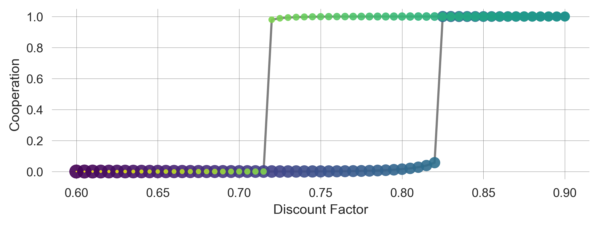
The hysteresis curve shows that the probability of cooperation among agents in the prosperous state depends on the history of the discount factor. The agents’ learning dynamics exhibit a memory of the past, a typical feature of complex systems.
11.4 Learning goals revisited
In this chapter,
- we introduced deterministic approximation models of the stochastic reinforcement learning process as a valuable tool for modeling complex human-environment interactions. Collective reinforcement learning dynamics model adaptive agents (in stylized model environments)
- that use a perfect model of the world
- in a computationally fast
- transparent
- and deterministically evolving way.
- We studied complex dynamic phenomena of multi-agent reinforcement learning in the ecological public good environment.
- To do so, we used the open-source
pyCRLDPython package.
11.5 Synthesis
Collective reinforcement learning dynamics bridge agent-based, equation-based (dynamic systems), and equilibrium-based modeling:
- agent-based: derived from individual agent characteristics
- equation-based: treated as a dynamical systems
- equilibrium-based: fixed points are (close to) the classic equilibrium solutions